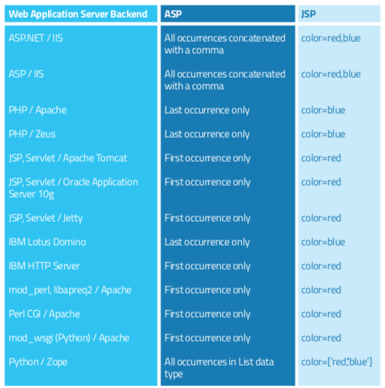

HTTP parameters pollution
Where to search
Look for places where application creates 3rd party sites URLs with parameters and then redirects to them.
Check if HPP in these cases can be used as open redirect.
HPP can be used to bypass (not only) ID parameters. Ad second parameter and change the value. Only first (or last) parameter
can be validated.
Simple auth bypass
If server is PHP < 6 powered and register_globalsdirective enabled then try to add additional parameters
authenticated=1
auth=1
...
which can override internal server variable.
Attacks Against URL Translation (Server-side HPP)
- Find parameters which causes changes in response if modified or omitted
- Append following strings to parameters in URL and check if all requests are processed normally
- %26foo%3dbar - URL-encoded &foo=bar
- %3bfoo%3dbar -URL-encoded ;foo=bar
- %2526foo%253dbar -Double URL-encoded &foo=bar
- %253bfoo%253dbar -Double URL-encoded ;foo=bar
- Attempt to inject a known parameter at various points in the request to see if it can override or modify an existing parameter
- FromAccount=18281008%26Amount%3d4444&Amount=1430&ToAccount=08447656
- If this causes the new value to override the existing one, determine whether you can bypass any front-end validation by injecting a value that is read by a back-end server.
- Replace the injected known parameter with additional parameter names as described for application mapping and content discovery
- Test the application’s tolerance of multiple submissions of the same parameter within a request. Submit redundant values before and after other parameters, and at different locations within the request (within the query string, cookies, and the message body
Behavior by Application Server
Given the URL and querystring: http:/example.com/?color=red&color=blue

Test for server-side HPP
[1] Submit an HTTP request containing the standard parameter name and value, and record the HTTP response. E.g. page?par1=val1
[2] Replace the parameter value with a tampered value, submit and record the HTTP response. E.g. page?par1=HPP_TEST1
[3] Send a new request combining step (1) and (2). Again, save the HTTP response. E.g. page?par1=val1&par1=HPP_TEST1
[4] Compare the responses obtained during all previous steps. If the response from (3) is different from (1) and the response from (3) is also different from (2), there is an impedance mismatch that may be eventually abused to trigger HPP vulnerabilities.